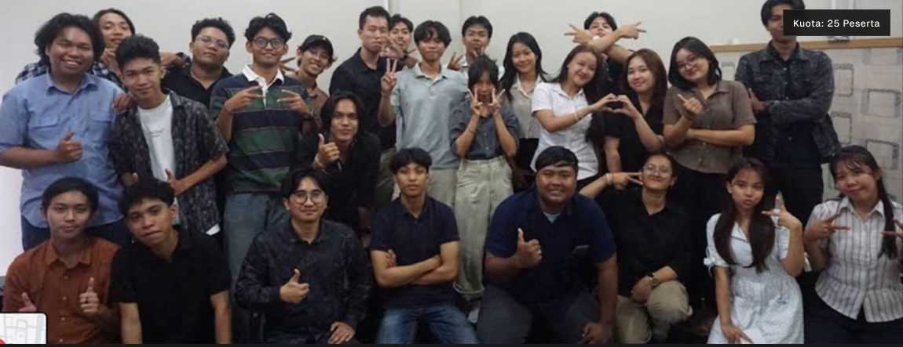

Kuota: 25 PesertaWorkshop AI Tanpa Coding
Pelajari cara membangun workflow otomatisasi cerdas, agen AI, chatbot WhatsApp, dan integrasi data bisnis secara praktis tanpa perlu menulis ribuan baris kode.
Lihat Dokumentasi ↗Menjelajahi rekam jejak kolaborasi, sesi workshop teknikal, dan inisiatif industri yang diselenggarakan oleh Sinar Teknologi Indonesia untuk mendorong inovasi ekosistem digital.
Arsip kegiatan dan pencapaian komunal.

Kuota: 25 PesertaPelajari cara membangun workflow otomatisasi cerdas, agen AI, chatbot WhatsApp, dan integrasi data bisnis secara praktis tanpa perlu menulis ribuan baris kode.
Lihat Dokumentasi ↗